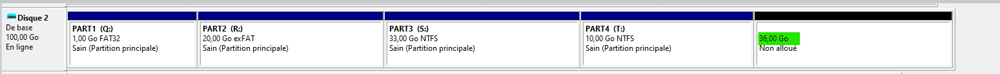
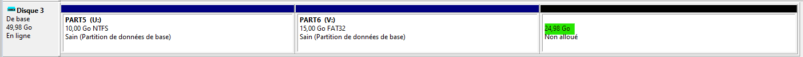

Exercice de la semaine 5 - Cours théorique
Vous devez insérer le disque SSD dans le tiroir de l'ordinateur du laboratoire.
Dans le menu Ventoy, vous devez prendre W11_1R1_A23_1.vhd.
Il s'agit d'une image d'une unité de stockage qui a Windows 11.
Ventoy est en mesure d'exécuter un système d'exploitation à partir d'un fichier VHD. Le fichier VHD est considéré comme un disque virtuel.
Pour vous aider à faire les exercices, référez-vous à la section Procédures -> Windows -> Gestion des disques des notes de cours.
L'ordinateur du laboratoire n'a pas accès à internet.
Utilisez votre portable pour accéder aux notes de cours.
1. Accès à Gestion du disque
Dans Windows, accédez à Gestion du disque.
Vous allez voir cette section.

Il est important de ne faire aucune manipulation sur le Disque 0 et le Disque 1, car ce sont les disques qui contient Ventoy et Windows.
2. Création des disques virtuels
Ne fermez pas la fenêtre de Gestion du disque.
Vous devez exécuter, en tant qu'administrateur, le script c:\exercices\cours5\Depart.bat pour créer les disques virtuels.
Dans la fenêtre de Gestion du disque, vous allez voir 6 nouveaux disques. Les disques 2 à 7 sont ajoutés comme dans l'image ci-dessous.

3. Exercices
3.1 Identification de la taille des disques
Identifiez la taille des disques #2 à #7.
Réponse
Disque 3 : 49.98 Go
Disque 4 : 34.98 Go
Disque 5 : 80.00 Go
Disque 6 : 40.00 Go
Disque 7 : 40.00 Go
3.2 Identification des systèmes de fichiers
Pour les disques #2 et #3, trouvez le nom des partitions pour chacun des types de système de fichiers.
NTFS
Réponse
PART3
PART4
PART5
FAT32
Réponse
PART1
PART6exFAT
Réponse
PART2
3.3 Espace non alloué
Pour les disques #2 et #3, déterminez l'espace qui n'est pas alloué.
Disque 2
Réponse
36.00 GoDisque 3
Réponse
24.98 Go
3.4 Identifiez le style de partition
Pour les disques #2 à #5, trouvez le style de partition.
Disque 2
Réponse
MBR (Enregistrement de démarrage principal)Disque 3
Réponse
GPTDisque 4
Réponse
GPTDisque 5
Réponse
MBR (Enregistrement de démarrage principal)
3.5 Renommer une partition
Renommez les partitions du disque #3.
- PART5 doit devenir ZONE5
- PART6 doit devenir ZONE6
Réponse

3.6 Modifier une lettre
Modifiez la lettre de la partition PART3 pour la lettre G.
Réponse
3.7 Retirer une lettre
Retirez la lettre de la partition PART1.
Réponse

3.8 Créer des partitions
Pensez à convertir les Go en Mo avec le facteur 1024, car c'est Windows.
Sur le disque #4, créez les partitions ci-dessous.
| Nom | Système de fichiers | Taille | Lettre |
|---|---|---|---|
| INFO | FAT32 | 1,5 Go | M |
| DATA | NTFS | 17 Go | N |
| BACKUP | FAT32 | Espace restant | O |
Vous devez voir la même chose que l'image ci-dessous.
Réponse

3.9 Supprimer une partition
Supprimez la partition PART4 du disque #2.
Réponse
3.10 Augmenter la taille d'une partition
Augmentez la taille de la partition PART3 du disque #2 pour avoir uniquement 1 Go de non alloué.
Déterminez la quantité à ajouter.
Réponse
Il reste 47 101 Mo de disponible pour augmenter la partition.
Pour avoir 1 Go de non alloué, il faut soustraire 1024.
47 101 - 1 024 = 46 077 Mo

3.11 Initialiser un disque
Les disques #6 et #7 ont 40 Go.
Initialisez le disque #6 en MBR.
Initialisez le disque #7 en GPT.
Réponse

3.12 Création des partitions en mode MBR
Créez les partitions ci-dessous sur le disque #6.
| Nom | Système de fichiers | Taille | Lettre |
|---|---|---|---|
| P1 | NTFS | 8 Go | Z |
| P2 | NTFS | 8 Go | Y |
| P3 | NTFS | 8 Go | X |
| P4 | NTFS | 8 Go | W |
| P5 | NTFS | Espace restant | T |
Réponse
Pourquoi les partitions P4 et P5 ont une couleur différente ? En mode MBR, c'est un maximum de 4 partitions primaires. Dans le cas qu'une 5e partition est nécessaire en mode MBR, il faut créer une partition étendue. Windows est en mesure de travailler avec des partitions étendues, mais il est préférable d'utiliser le mode GTP lorsqu'il y a plus de 4 partitions à créer.
3.13 Création des partitions en mode GPT
Retirez les lettres de lecteurs pour chacune des partitions du disque #6.
Créez les partitions ci-dessous sur le disque #7.
| Nom | Système de fichiers | Taille | Lettre |
|---|---|---|---|
| P1 | NTFS | 8 Go | Z |
| P2 | NTFS | 8 Go | Y |
| P3 | NTFS | 8 Go | X |
| P4 | NTFS | 8 Go | W |
| P5 | NTFS | Espace restant | T |
Réponse

Le mode GPT permet de créer jusqu'à 128 partitions.
3.14 Création d'une partition en FAT32
Créez une seule partition en FAT32 sur le disque #5. La partition doit avoir 80 Go.
Seulement NTFS et exFAT sont disponibles. Pourquoi ?
Réponse
La taille maximale d'une partition FAT32 est de 32 Go.
Essayez avec une taille de 32769 Mo (32,001 Go). Le FAT32 n'est pas disponible.
Essayez avec une taille de 32768 Mo (32 Go). Le FAT32 est disponible.
4. À la maison
Il est possible de faire les exercices à la maison.
Veuillez télécharger le fichier Zip : exercice_cours5.zip
Avant d'exécuter le script, vous devez ouvrir la Gestion des disques.
Il est important d'effectuer uniquement les actions sur les disques qui s'ajouteront après l'exécution du script.
Une action sur vos disques internes peut endommager votre installation de Windows de façon permanente.
Le numéro de disque qui sera créé dans l'utilitaire dépend des disques réels que vous avez dans votre ordinateur.
Dans la majorité des cas, vous aurez uniquement le Disque 0.
Donc le numéro de disque #2 de l'activité sera dans votre ordinateur le disque #1.
À l'inverse, si vous avez les disques 0, 1 et 2 dans votre ordinateur, le disque #2 de l'activité sera la #3 dans votre ordinateur.
Il faut extraire tout le contenu du fichier exercice_cours5.zip dans le dossier de votre choix et exécuter le fichier Depart.bat en tant qu'administrateur.
À la fin de l'exercice, veuillez redémarrer l'ordinateur et ensuite, vous pouvez supprimer le dossier c:\vhd qui contient les disques virtuels.